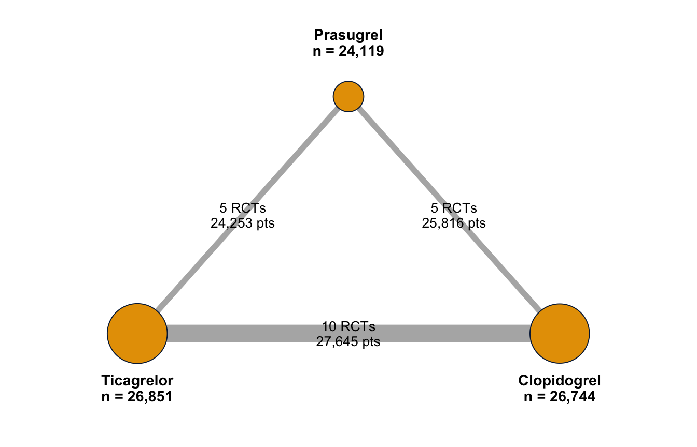
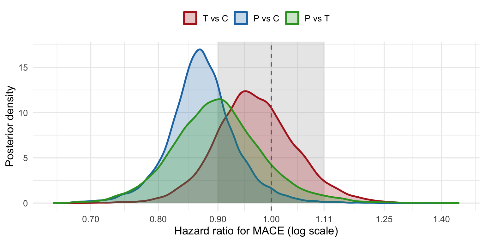

explain why a statistical model is not neutral, using a single large trial analysed with complete, no and partial pooling;
explain what a network meta-analysis (NMA) adds to pairwise meta-analyses, and compute an indirect comparison by hand;
define transitivity and consistency, and check consistency by node-splitting;
describe an arm-based binomial NMA with a complementary log-log link, and why fixed- and random-effects NMAs can lead to different conclusions;
enter cluster and stepped-wedge trials in an NMA with their adjusted estimates;
report an NMA with posterior probabilities of clinically meaningful benefit, equivalence and harm rather than rankings, and appraise a published NMA.
R packages:dplyr, tidyr, purrr, readr, ggplot2, metafor, lme4, knitr; brms for code shown but not run here.
Clinicians rarely choose between two treatments. After an acute coronary syndrome, a patient receives aspirin and one of three P2Y12 inhibitors (clopidogrel, ticagrelor or prasugrel), and the trials compare them two at a time. Network meta-analysis combines all of these comparisons, direct and indirect, into one coherent set of estimates. It is also where every earlier chapter’s warnings apply at once: the answer depends on which trials are included, how trustworthy they are, and what the model assumes about heterogeneity. This chapter uses the antiplatelet story throughout, starting with the trial that made ticagrelor a guideline favourite.
17.1 A prerequisite: trustworthy trials and honest models
The PLATO trial randomised 18,624 patients with an acute coronary syndrome, at 862 centres in 43 countries, to ticagrelor or clopidogrel. At 12 months the primary outcome (vascular death, myocardial infarction or stroke) had occurred in 9.8% of patients on ticagrelor and 11.7% on clopidogrel, HR 0.84 (95% CI 0.77 to 0.92) (1). Questions were raised about the trial’s conduct and adjudication (2), and in the United States, where ticagrelor appeared harmful, the result was not reproduced. No fraud has been shown, but the episode raises a question that every meta-analysis must face: how much should the regions of one trial, or the trials of one review, be assumed to share?
The answer is a modelling choice, and modelling choices matter. When 73 research teams were given the same data to test the same social-science hypothesis, 58% of their 1,253 models had a confidence interval including zero, 17% found a significant effect in one direction and 25% in the other (3).
17.1.1 Complete, no and partial pooling
The FDA’s review of PLATO reported events by region. Treating the six regions as six “studies” gives three ways to analyse the same trial.
Complete pooling (“lumping”) assumes one identical effect in every region: RR 0.85 (0.78 to 0.92), essentially the published result.
No pooling (“splitting”) analyses each region alone: in the US, 1,413 patients, RR 1.25 (0.92 to 1.70), suggesting harm.
Partial pooling treats the regions as different but related: \(y_j \sim N(\theta_j, s_j^2)\), \(\theta_j \sim N(\mu, \tau^2)\), the random-effects model of Chapter 9 applied within one trial. Each region’s estimate is shrunk towards \(\mu\) by the factor \(\lambda_j = \tau^2/(\tau^2 + s_j^2)\), small noisy regions more than large ones, and \(\tau\) is learned from the data.
With six regions, τ is poorly determined, so the Bayesian version, which averages over its uncertainty rather than plugging in one estimate, is the natural choice (Section 12.2.1). The model is fitted below on a grid, with priors \(\mu \sim N(0, 1)\) and \(\tau \sim\) half-\(N(0, 0.5)\) on the log RR scale; the equivalent brms code is shown after it.
Code
nn_grid <-function(yi, sei, mu_sd =1, tau_sd =0.5, grid =300, n_draws =40000) { g <-expand.grid(mu =seq(-1.5, 1.5, length.out = grid), tau =seq(0, 1.5, length.out = grid)) lp <-dnorm(g$mu, 0, mu_sd, log =TRUE) +dnorm(g$tau, 0, tau_sd, log =TRUE)for (i inseq_along(yi)) lp <- lp +dnorm(yi[i], g$mu, sqrt(sei[i]^2+ g$tau^2), log =TRUE) s <- g[sample(nrow(g), n_draws, replace =TRUE, prob =exp(lp -max(lp))), ] s$mu <- s$mu +runif(n_draws, -1.5, 1.5) / (grid -1) # jitter within a grid cell s$tau <-abs(s$tau +runif(n_draws, -0.75, 0.75) / (grid -1))# each region's true effect, given mu and tau (normal-normal conditional posterior) theta <-sapply(seq_along(yi), \(j) { w <- s$tau^2/ (s$tau^2+ sei[j]^2)rnorm(n_draws, w * yi[j] + (1- w) * s$mu, sqrt(w) * sei[j]) })list(mu = s$mu, tau = s$tau, new =rnorm(n_draws, s$mu, s$tau), theta = theta)}set.seed(629)pp <-nn_grid(plato$yi, plato$sei)q3 <- \(x) exp(quantile(x, c(0.5, 0.025, 0.975)))
Code
library(brms) # the same model by MCMCpriors <-c(prior(normal(0, 1), class = Intercept), prior(normal(0, 0.5), class = sd))fit_plato <-brm(yi |se(sei) ~1+ (1| Region), data = plato, prior = priors,chains =4, iter =4000, seed =629, control =list(adapt_delta =0.99))
Figure 17.1: PLATO by region: observed risk ratios (no pooling), Bayesian partially pooled estimates, and overall estimates under complete pooling, partial pooling, and for a new region.
The US estimate is pulled from 1.25 towards the others (1.02), while Eastern Europe, the largest region, barely moves. The overall estimate, RR 0.88 (0.74 to 1.10), is less certain than complete pooling suggests, and for a new region (a confirmatory North American trial, say) the prediction runs from 0.56 to 1.45: from clear benefit to harm. The posterior probability that ticagrelor reduces risk at all is 90%, and that it reduces it by at least 10% is 61%. A hierarchical re-analysis with somewhat different priors reached a similar conclusion (4). A conclusion that changes materially with a reasonable change of model is not robust, whatever the P value under any one model.
17.1.2 A new trial, designed with the prior evidence
That uncertainty justified a new trial. TC4 randomised 1,005 patients with an acute coronary syndrome at one Montreal hospital to ticagrelor or clopidogrel, by two-month time clusters, with 12-month outcomes taken from Quebec’s administrative health databases: a pragmatic, registry-based design that cost about $300 per patient and lost no one to follow-up (5). It was designed and analysed as a Bayesian trial, with a community of priors (Chapter 13): a vague prior, a “focused” primary prior from the North American PLATO patients, an “enthusiastic” prior from all of PLATO, a modified enthusiastic prior allowing for regional heterogeneity, and a summary prior from a network meta-analysis.
Code
tibble::tribble(~Prior, ~`RR (95% CrI)`, ~`P(benefit)`, ~`P(equivalence)`, ~`P(harm)`,"Vague", "0.95 (0.67 to 1.35)", "37%", "42%", "21%","Focused (primary)", "1.12 (0.91 to 1.39)", "2%", "41%", "57%","Enthusiastic", "0.85 (0.78 to 0.93)", "89%", "11%", "0%","Modified enthusiastic", "1.03 (0.73 to 1.44)", "22%", "35%", "43%","Summary (earlier NMA)", "0.99 (0.69 to 1.38)", "30%", "44%", "26%") |>kable(align ="lcccc")
Table 17.1: TC4: posterior risk ratio for the primary outcome (ticagrelor vs clopidogrel; events 50/450 vs 64/555) under each prior, with probabilities of meaningful benefit (RR < 0.9), practical equivalence (0.9 to 1.1) and meaningful harm (RR > 1.1), as published (5).
Prior
RR (95% CrI)
P(benefit)
P(equivalence)
P(harm)
Vague
0.95 (0.67 to 1.35)
37%
42%
21%
Focused (primary)
1.12 (0.91 to 1.39)
2%
41%
57%
Enthusiastic
0.85 (0.78 to 0.93)
89%
11%
0%
Modified enthusiastic
1.03 (0.73 to 1.44)
22%
35%
43%
Summary (earlier NMA)
0.99 (0.69 to 1.38)
30%
44%
26%
Only the enthusiastic prior, which ignores PLATO’s regional heterogeneity, makes ticagrelor’s benefit the most probable conclusion. TC4 alone cannot settle the question; it is one more node of evidence for the network.
17.2 Why network meta-analysis
The data used in the rest of this chapter come from a Bayesian network meta-analysis of the three drugs: 20 randomised trials with 77,714 patients, restricted to trials at low risk of bias with at least six months’ follow-up (6). Three separate pairwise meta-analyses answer three separate questions, each from part of the evidence.
Figure 17.2: Direct evidence only: Bayesian pairwise meta-analyses of the head-to-head trials (hazard ratio for MACE; T = ticagrelor, P = prasugrel, C = clopidogrel).
Prasugrel versus ticagrelor can also be estimated indirectly, through their common comparator clopidogrel, without using the five head-to-head trials. On the log scale the indirect estimate is a difference (7):
se_ci <- \(lo, hi) (log(hi) -log(lo)) / (2*1.96) # SE from a 95% intervald_tc <-filter(dp, comparison =="T vs C"); d_pc <-filter(dp, comparison =="P vs C")ind <-log(d_pc$median_HR) -log(d_tc$median_HR)se_ind <-sqrt(se_ci(d_pc$lo95_HR, d_pc$hi95_HR)^2+se_ci(d_tc$lo95_HR, d_tc$hi95_HR)^2)fmt3(exp(ind +c(0, -1.96, 1.96) * se_ind))
[1] "0.94 (0.70 to 1.27)"
The indirect estimate is much less precise than either of its parts, because the uncertainties of two comparisons add. A network meta-analysis combines direct and indirect evidence for every comparison in one model, so that the three estimates are coherent (P vs T equals P vs C divided by T vs C) and every trial contributes to every comparison it informs.
17.3 Network geometry
Code
mace <-read_csv("data/ch17/input_mace.csv", show_col_types =FALSE)bleed <-read_csv("data/ch17/input_bleed.csv", show_col_types =FALSE)mace |>filter(study %in%c("PLATO", "TRITON-TIMI 38", "ISAR-REACT 5")) # one row per trial arm
study
arm
treat
r
n
time_yr
pci_only
PLATO
1
C
1205
9291
1.00
TRUE
PLATO
2
T
1028
9333
1.00
TRUE
TRITON-TIMI 38
1
C
877
6795
1.25
TRUE
TRITON-TIMI 38
2
P
724
6813
1.25
TRUE
ISAR-REACT 5
1
T
208
2012
1.00
TRUE
ISAR-REACT 5
2
P
152
2006
1.00
TRUE
Code
drug_names <-c(C ="Clopidogrel", T ="Ticagrelor", P ="Prasugrel")comps <- mace |>summarise(.by = study, comp =paste(sort(unique(treat), decreasing =TRUE), collapse =" vs "), N =sum(n)) |>mutate(comp =recode(comp, "T vs P"="P vs T"))nodes <- tibble::tibble(drug =c("Prasugrel", "Clopidogrel", "Ticagrelor"), x =c(0, 1, -1), y =c(1, -0.4, -0.4)) |>left_join(mace |>summarise(.by = treat, n =sum(n)) |>mutate(drug = drug_names[treat]), by ="drug")edges <- tibble::tibble(from =c("Prasugrel", "Prasugrel", "Ticagrelor"),to =c("Clopidogrel", "Ticagrelor", "Clopidogrel"), comp =c("P vs C", "P vs T", "T vs C")) |>left_join(comps |>summarise(.by = comp, trials =n(), N =sum(N)), by ="comp") |>left_join(select(nodes, from = drug, x1 = x, y1 = y), by ="from") |>left_join(select(nodes, to = drug, x2 = x, y2 = y), by ="to")ggplot() +geom_segment(data = edges, aes(x1, y1, xend = x2, yend = y2, linewidth = trials), colour ="grey70") +geom_label(data = edges, aes((x1 + x2) /2, (y1 + y2) /2,label =paste0(trials, " RCTs\n", format(N, big.mark =","), " pts")),size =3.5, label.size =0, lineheight =0.9) +geom_point(data = nodes, aes(x, y, size = n), shape =21, fill ="#E69F00", colour ="#041E42") +geom_text(data = nodes, aes(x, y +ifelse(y >0, 0.32, -0.32),label =paste0(drug, "\nn = ", format(n, big.mark =","))),fontface ="bold", size =3.8, lineheight =0.9) +scale_linewidth(range =c(2, 6), guide ="none") +scale_size(range =c(10, 20), guide ="none") +coord_cartesian(xlim =c(-1.5, 1.5), ylim =c(-0.95, 1.45)) +theme_void()

Figure 17.3: The DAPT network: nodes sized by patients randomised, edges by number of trials.
Nodes are treatments; edges are comparisons with direct randomised evidence. Every pair here has direct evidence, so the network is a closed loop and direct and indirect estimates can be compared. A star network, in which every treatment is compared only with placebo, has no loops: indirect comparisons are then entirely dependent on the transitivity assumption and cannot be checked.
17.4 Transitivity and consistency
Transitivity is the clinical assumption behind every indirect comparison: the trials of T versus C and those of P versus C must be similar in their distribution of effect modifiers, characteristics that change the size of the relative effect. Equivalently, every patient in the network could in principle have been randomised to any of the treatments. In the DAPT network, TREAT (patients given fibrinolysis) and TRILOGY ACS (medically managed patients, without PCI) differ from the PCI trials; SWITCH-SWEDEHEART enrolled unselected registry patients; prasugrel is dose-reduced in older and lighter patients. Transitivity cannot be tested statistically. Tabulate effect modifiers by comparison, and run sensitivity analyses that restrict the network to similar trials.
Consistency is its statistical counterpart: where direct and indirect evidence exist for the same comparison, they should agree. Node-splitting estimates the comparison separately from the direct trials and from the rest of the network, and examines their difference (8).
Figure 17.4: Node-splitting for prasugrel vs ticagrelor (MACE): direct, indirect and network estimates, and the ratio of direct to indirect. Shaded band: hazard ratios of 0.90 to 1.11.
The direct trials favour prasugrel more than the indirect route, which inherits the near-null ticagrelor-versus-clopidogrel result. Their ratio, 0.86 (0.59 to 1.22), is compatible with consistency but also with substantial inconsistency: with five direct trials, the check has little power. When direct and indirect evidence clearly disagree, investigate which trials or populations differ; do not simply average incompatible sources (Chapter 18 shows what happens when this is not done).
17.5 Models for network meta-analysis
17.5.1 An arm-based model on the hazard scale
The DAPT trials report events \(r_{ij}\) among \(n_{ij}\) patients in arm \(j\) of trial \(i\), over follow-up times \(t_i\) from 6 to 30 months. A binomial model with a complementary log-log link and a follow-up offset puts all trials on a common hazard scale (9):
where \(\mu_i\) is trial \(i\)’s baseline (clopidogrel) log hazard, \(\beta_j\) the network log hazard ratio of drug \(j\) versus clopidogrel (\(\beta_C = 0\)), and \(u_{ij}\) the trial-specific deviation, with between-trial SDs \(\tau_T\) and \(\tau_P\). If the hazard λ is constant, \(\pi = 1 - e^{-\lambda t}\), so \(\log(-\log(1 - \pi)) = \log \lambda + \log t\): differences on this scale are log hazard ratios. Odds ratios would exaggerate the hazard ratios here, because events are common and follow-up varies. Prasugrel versus ticagrelor is \(\exp(\beta_P - \beta_T)\), so all three comparisons come from one posterior.
The model was fitted with brms and Stan, with priors \(\beta_j \sim N(0, 0.5^2)\), \(\tau \sim\) half-\(N(0, 0.5)\) and an LKJ(1) prior on the correlation of the deviations. The code is below; it takes several minutes to run, so the chapter uses the saved posterior draws.
In brms, (treat | study) gives trial-specific baselines and trial-specific treatment deviations; (1 | study) gives baselines only, the fixed-effect NMA. (Here the trial baselines also have a common distribution; a strictly contrast-based NMA would make them fixed.)
17.5.2 Fixed versus random effects
Code
draws <-read_csv("data/ch17/posterior_draws.csv", show_col_types =FALSE) |>mutate(logHR_PT = logHR_PC - logHR_TC)rope_lo <-log(0.90); rope_hi <-log(1.11)pct <- \(p) ifelse(p <0.005, "<1%", sprintf("%.0f%%", 100* p))summ <- \(x) tibble::tibble(HR =sprintf("%.2f (%.2f to %.2f)", exp(median(x)), exp(quantile(x, 0.025)),exp(quantile(x, 0.975))),pben =mean(x < rope_lo), prope =mean(x >= rope_lo & x <= rope_hi),pharm =mean(x > rope_hi))long <- draws |>pivot_longer(starts_with("logHR"), names_to ="comp", values_to ="lh", names_prefix ="logHR_") |>mutate(comp =factor(comp, levels =c("TC", "PC", "PT"), labels =c("T vs C", "P vs C", "P vs T")))res <- long |>group_by(model, comp) |>reframe(summ(lh))tau_re <- draws |>filter(model =="MACE_RE")
Table 17.2: Fixed- and random-effects NMA of MACE: posterior hazard ratios and probabilities of a clinically meaningful benefit (HR < 0.90).
Comparison
Fixed effect: HR (95% CrI)
FE: P(HR < 0.9)
Random effects: HR (95% CrI)
RE: P(HR < 0.9)
T vs C
0.92 (0.86 to 0.98)
24%
0.97 (0.83 to 1.14)
16%
P vs C
0.85 (0.80 to 0.90)
98%
0.87 (0.76 to 1.01)
72%
P vs T
0.92 (0.86 to 0.99)
27%
0.90 (0.76 to 1.09)
51%
The fixed-effect NMA makes all three comparisons “significant”: a confident hierarchy of prasugrel over ticagrelor over clopidogrel. Once heterogeneity is acknowledged, every interval widens to include values close to no effect. The between-trial SDs are themselves uncertain, τT = 0.14 (0.02 to 0.37) and τP = 0.10 (0.01 to 0.34), and the Bayesian model carries that uncertainty into every comparison. Leave-one-out cross-validation preferred the random-effects model in the original analysis (6), but a clinical judgement that trials from different decades, countries and populations are unlikely to share one identical effect should come first.
A frequentist version of the same model can be fitted with lme4 as a check (trials with no events at all are dropped, since they carry no information about the relative effect):
Code
eff <-read_csv("data/ch17/switch_effective_counts.csv", show_col_types =FALSE)dfq <- mace |>mutate(r =case_when(study =="SWITCH-SWEDEHEART"& treat =="T"~ eff$r0[1], study =="SWITCH-SWEDEHEART"& treat =="P"~ eff$r1[1], TRUE~ r),n =case_when(study =="SWITCH-SWEDEHEART"& treat =="T"~ eff$n0[1], study =="SWITCH-SWEDEHEART"& treat =="P"~ eff$n1[1], TRUE~ n),isT =as.numeric(treat =="T"), isP =as.numeric(treat =="P"), lt =log(time_yr)) |>filter(.by = study, sum(r) >0)f_fe <-glm(cbind(r, n - r) ~0+factor(study) + isT + isP +offset(lt),family =binomial("cloglog"), data = dfq)f_re <-glmer(cbind(r, n - r) ~0+factor(study) + isT + isP + (0+ isT + isP || study) +offset(lt),family =binomial("cloglog"), data = dfq, control =glmerControl(optimizer ="bobyqa"))hr_row <- \(b, se) sprintf("%.2f (%.2f to %.2f)", exp(b), exp(b -1.96* se), exp(b +1.96* se))tibble::tibble(Model =c("Fixed effect (glm)", "Random effects (glmer, ML)"),`T vs C`=c(hr_row(coef(f_fe)["isT"], sqrt(vcov(f_fe)["isT", "isT"])),hr_row(fixef(f_re)["isT"], sqrt(vcov(f_re)["isT", "isT"]))),`P vs C`=c(hr_row(coef(f_fe)["isP"], sqrt(vcov(f_fe)["isP", "isP"])),hr_row(fixef(f_re)["isP"], sqrt(vcov(f_re)["isP", "isP"]))),`τ (T, P)`=c("0, 0", paste(sprintf("%.2f", attr(VarCorr(f_re)$study, "stddev")),sprintf("%.2f", attr(VarCorr(f_re)$study.1, "stddev")), sep =", "))) |>kable(align ="lccc")
Model
T vs C
P vs C
τ (T, P)
Fixed effect (glm)
0.92 (0.86 to 0.98)
0.85 (0.80 to 0.90)
0, 0
Random effects (glmer, ML)
0.97 (0.89 to 1.06)
0.86 (0.81 to 0.92)
0.07, 0.00
The point estimates agree with the Bayesian ones. But maximum likelihood estimates one of the between-trial SDs as zero, and the random-effects intervals are then almost as narrow as the fixed-effect ones: the boundary problem of Section 9.3.1, which a Bayesian analysis avoids by averaging over the plausible values of τ.
17.6 Trials that are not individually randomised
SWITCH-SWEDEHEART randomised seven Swedish regions, in three clusters, to switch at staggered times from a default ticagrelor policy to a default prasugrel policy: a stepped-wedge cluster trial of 17,095 patients undergoing PCI for an acute coronary syndrome (10). At one year the primary outcome (death, myocardial infarction or stroke) occurred in 11.1% under the prasugrel policy and 11.8% under the ticagrelor policy, adjusted OR 0.90 (95% CI 0.77 to 1.06); major bleeding was lower with prasugrel, OR 0.80 (0.64 to 0.99).
Entering the crude counts in an arm-based NMA would be wrong for two reasons. Every cluster started on ticagrelor and ended on prasugrel, so calendar time is confounded with treatment and the effect is identified only after adjusting for time. And patients within a cluster are correlated, so treating 17,095 patients as independent overstates the trial’s precision. The fix is to convert the adjusted estimate into effective counts: keep the observed ticagrelor-arm risk, set the prasugrel-arm risk so that the odds ratio equals the adjusted OR, and shrink both arms by a common factor so that the binomial standard error matches the adjusted one, a generalisation of the effective-sample-size method for cluster trials (11).
e <- sw[1, ] # check: reproduces the adjusted estimatepredict(rma(measure ="OR", ai = e$r1, n1i = e$n1, ci = e$r0, n2i = e$n0, method ="EE"), transf = exp)
pred ci.lb ci.ub
0.8985 0.7658 1.0542
The design effect, 2.8 for MACE and 1.9 for bleeding, is the number of crude patients worth one independent patient. Entered with crude counts, this one trial would carry nearly three times its proper weight for MACE, and would bring the calendar-time bias of the crude contrast with it.
17.7 Results: probabilities, not just intervals
Code
comp_cols <-c("T vs C"="#B22222", "P vs C"="#1F78B4", "P vs T"="#33A02C")long |>filter(model =="MACE_RE") |>ggplot(aes(exp(lh), colour = comp, fill = comp)) +annotate("rect", xmin =0.90, xmax =1.11, ymin =0, ymax =Inf, fill ="grey70", alpha =0.3) +geom_density(alpha =0.25, linewidth =1) +geom_vline(xintercept =1, linetype ="dashed", colour ="grey40") +scale_colour_manual(values = comp_cols, name =NULL) +scale_fill_manual(values = comp_cols, name =NULL) +scale_x_log10(limits =c(0.65, 1.45), breaks =c(0.7, 0.8, 0.9, 1, 1.11, 1.25, 1.4)) +labs(x ="Hazard ratio for MACE (log scale)", y ="Posterior density") +theme(legend.position ="top")

Figure 17.5: Random-effects NMA: posterior distributions of the hazard ratio for MACE. Grey band: practical equivalence (0.90 to 1.11).
Table 17.3: Random-effects NMA: hazard ratios and posterior probabilities of clinically meaningful benefit (HR < 0.90), practical equivalence (0.90 to 1.11) and meaningful harm (HR > 1.11). For bleeding, ‘benefit’ means less bleeding with the first-named drug.
Outcome
Comparison
HR (95% CrI)
P(benefit)
P(equivalence)
P(harm)
MACE
T vs C
0.97 (0.83 to 1.14)
16%
79%
5%
MACE
P vs C
0.87 (0.76 to 1.01)
72%
28%
<1%
MACE
P vs T
0.90 (0.76 to 1.09)
51%
47%
2%
Major bleeding
T vs C
1.27 (1.04 to 1.62)
<1%
10%
89%
Major bleeding
P vs C
1.10 (0.88 to 1.33)
3%
51%
45%
Major bleeding
P vs T
0.86 (0.68 to 1.07)
68%
31%
1%
Ticagrelor and clopidogrel are probably equivalent for MACE (79% probability), with probable excess bleeding on ticagrelor (89%). Prasugrel has the strongest efficacy signal: a 72% probability of a meaningful MACE reduction versus clopidogrel, but a 45% probability of meaningful excess bleeding. Prasugrel is probably better than ticagrelor, but the probability that the difference is clinically meaningful is only 51%. Each reader can apply a different threshold to the same posterior draws; that flexibility is the reason to publish the posterior rather than only intervals.
17.7.1 Absolute effects
Relative effects are roughly portable; absolute effects depend on baseline risk. Under proportional hazards, a one-year risk \(p_0\) on clopidogrel becomes \(1 - (1 - p_0)^{HR}\) on prasugrel.
Code
abs_diff <- \(lh, p0) 100* (p0 - (1- (1- p0)^exp(lh))) # events prevented per 100qs <- \(x) sprintf("%.1f (%.1f to %.1f)", median(x), quantile(x, 0.025), quantile(x, 0.975))lhm <- draws$logHR_PC[draws$model =="MACE_RE"]; lhb <- draws$logHR_PC[draws$model =="Bleeding_RE"]tibble::tibble(`Prasugrel vs clopidogrel, per 100 patients per year`=c("MACE prevented (baseline 10%)", "Extra major bleeds (baseline 3%)","Extra major bleeds (baseline 8%, high bleeding risk)"),`Median (95% CrI)`=c(qs(abs_diff(lhm, 0.10)), qs(-abs_diff(lhb, 0.03)), qs(-abs_diff(lhb, 0.08)))) |>kable(align ="lc")
Prasugrel vs clopidogrel, per 100 patients per year
Median (95% CrI)
MACE prevented (baseline 10%)
1.2 (-0.1 to 2.3)
Extra major bleeds (baseline 3%)
0.3 (-0.3 to 1.0)
Extra major bleeds (baseline 8%, high bleeding risk)
0.7 (-0.9 to 2.5)
At typical risk the expected reduction in MACE exceeds the expected excess bleeding; for a patient at high bleeding risk the balance narrows, and both intervals include zero.
17.7.2 Sensitivity analyses
Code
read_csv("data/ch17/sensitivity_mace.csv", show_col_types =FALSE) |>mutate(hr =sprintf("%.2f (%.2f to %.2f)", median_HR, lo95_HR, hi95_HR),outcome =sub("Primary \\(cloglog RE\\)", "Primary analysis", outcome)) |>select(outcome, comparison, hr, pr_clin_benefit, pr_rope) |>pivot_wider(names_from = comparison, values_from =c(hr, pr_clin_benefit, pr_rope)) |>transmute(Analysis = outcome, `T vs C: P(equivalence)`=pct(`pr_rope_T vs C`),`P vs C: HR (95% CrI)`=`hr_P vs C`, `P vs C: P(benefit)`=pct(`pr_clin_benefit_P vs C`),`P vs T: P(benefit)`=pct(`pr_clin_benefit_P vs T`)) |>kable(align ="lcccc")
Table 17.4: Pre-specified sensitivity analyses (MACE, random effects).
Analysis
T vs C: P(equivalence)
P vs C: HR (95% CrI)
P vs C: P(benefit)
P vs T: P(benefit)
Primary analysis
79%
0.87 (0.76 to 1.01)
72%
51%
SA1: log-OR
78%
0.85 (0.72 to 0.99)
81%
64%
SA2: PCI-only
75%
0.83 (0.73 to 1.01)
84%
68%
SA3: excl. TC4
75%
0.88 (0.77 to 1.03)
68%
50%
SA4: excl. TUXEDO-2
76%
0.87 (0.76 to 1.02)
70%
49%
SA5: excl. PRAGUE-18
77%
0.87 (0.76 to 1.03)
69%
48%
SA6: tight tau
80%
0.87 (0.77 to 0.99)
73%
50%
SA7: wide tau
79%
0.87 (0.76 to 1.03)
70%
52%
SA8: excl. SWITCH-SWEDEHEART
76%
0.87 (0.76 to 1.03)
70%
54%
SA9: SWITCH-SWEDEHEART crude counts
78%
0.87 (0.77 to 1.00)
71%
48%
The conclusions for MACE are stable across a log-odds scale, PCI-only trials, omission of individual trials and tighter or wider priors for τ. A sensitivity analysis is informative when it is pre-specified and when the conclusion, not only the point estimate, is examined.
17.7.3 Same question, different trials
A frequentist NMA published in the same year asked a similar question, included 15 trials with 48,904 patients, and concluded from rankings that prasugrel “provided the optimal balance between efficacy and safety” (12). The two analyses share only some trials.
Table 17.5: Trials in the 2026 frequentist NMA (JAMA Cardiology) and in the Bayesian NMA used here.
Trial
Comparison
N
Follow-up
JAMA Cardiol 2026
Bayesian NMA
Note
TREAT
T vs C
3,799
12m
No
Yes
Non-PCI (fibrinolysis)
Gasecka
T vs C
55
6m
No
Yes
0 MACE events
POPular AGE
T vs C
1,002
12m
Yes
Yes
PHILO
T vs C
801
12m
Yes
Yes
He
T vs C
266
6m
No
Yes
Mohareb
T vs C
943
12m
No
Yes
TICAKOREA
T vs C
800
12m
Yes
Yes
PLATO
T vs C
18,624
12m
Yes
Yes
NA subgroup: no benefit
Wu
T vs C
350
12m
No
Yes
0 MACE events
TC4
T vs C
1,005
12m
No
Yes
North American; cluster RCT; no COI
TRILOGY ACS
P vs C
9,326
30m
No
Yes
0% PCI; excluded PCI-only SA
PRASFIT-ACS
P vs C
1,363
12m
Yes
Yes
Elderly ACS II
P vs C
1,443
12m
Yes
Yes
TRITON-TIMI 38
P vs C
13,608
15m
Yes
Yes
Yabe
P vs C
76
12m
No
Yes
PRAGUE-18
P vs T
1,230
12m
Yes (1mo)
Yes (1yr)
39% crossover to C — SA5
ISAR-REACT 5
P vs T
4,018
12m
Yes
Yes
REDUCE-MVI
P vs T
110
12m
No
Yes
Small STEMI trial
TUXEDO-2
P vs T
1,800
12m
Yes
Yes
DM+MVD; SA4
SWITCH-SWEDEHEART
P vs T
17,095
12m
No
Yes
Stepped-wedge cluster RCT; adjusted OR as effective counts; SA8, SA9
Tang 2016
T vs C
400
6m
Yes
No
Excluded: some concerns RoB
Wang 2016
T vs C
200
12m
Yes
No
Excluded: some concerns RoB
ALPHEUS
T vs C
1,883
1m
Yes
No
Excluded: 1-month follow-up
Eligibility rules set before any statistics (risk of bias, minimum follow-up, the population, which time point of PRAGUE-18 to use) shape the network. Before comparing the conclusions of two NMAs, compare their trial lists. The Bayesian NMA also differs in its model (random effects with uncertainty in τ propagated, a hazard rather than odds scale), its handling of SWITCH-SWEDEHEART, and its reporting: probabilities of meaningful differences rather than rankings.
17.8 Treatment rankings
Many NMAs summarise results by ranking. SUCRA, the surface under the cumulative ranking curve, rescales each treatment’s mean rank to between 0 (always worst) and 1 (always best), \(\text{SUCRA}_k = (K - \bar r_k)/(K - 1)\)(13); the P-score is its frequentist analogue, computed from point estimates and standard errors (14).
Table 17.6: Rankings for MACE from the random-effects posterior (rank 1 = lowest hazard).
Treatment
P(best)
Mean rank
SUCRA
Prasugrel
0.88
1.14
0.93
Ticagrelor
0.11
2.22
0.39
Clopidogrel
0.01
2.64
0.18
Prasugrel ranks first in 88% of draws, which sounds decisive. Yet the probability that it beats ticagrelor by a clinically meaningful margin is 51%. Rankings discard the size of the differences: a tiny, clinically irrelevant advantage that is consistent across draws earns a near-certain top rank, and a treatment can be the best of a weak field. Report effect sizes with credible intervals and the probabilities of meaningful benefit, equivalence and harm; if rankings are shown, show them as secondary, with their uncertainty.
The statistical model is not neutral: complete, no and partial pooling of the same trial lead to different conclusions, and partial pooling with honest uncertainty in τ is usually the defensible compromise.
NMA combines direct and indirect evidence into coherent estimates for every comparison; an indirect estimate is a difference on the log scale, with the variances added.
Transitivity (similar distributions of effect modifiers) is a clinical judgement; consistency, its statistical counterpart, is checked by node-splitting, which has little power with few direct trials.
Fixed-effect NMAs can create confident hierarchies that disappear when heterogeneity is acknowledged; a frequentist random-effects NMA with τ estimated at zero has the same problem.
Cluster and stepped-wedge trials must enter with their adjusted estimates and true information content.
Report probabilities of clinically meaningful benefit, equivalence and harm, and absolute effects, rather than rankings; compare trial lists before comparing NMAs.
Exercises
Refit the PLATO hierarchical model with τ ~ half-N(0, 0.25) and half-N(0, 1). How do the US estimate and the prediction for a new region change?
From Figure 17.2, compute the indirect estimate of ticagrelor versus clopidogrel through prasugrel and compare it with the direct estimate.
Using draws, compute the probability that prasugrel reduces MACE by at least 15% versus clopidogrel, and that it increases major bleeding by at least 25%.
Recompute SWITCH-SWEDEHEART’s effective counts if the adjusted 95% CI for MACE had been 0.70 to 1.15. What is the design effect?
Re-run freq-check with the crude SWITCH-SWEDEHEART counts. How do the P vs C and P vs T estimates change?
Further reading
(9) for the generalised linear model framework for NMA.
(17) for a conceptual introduction, and (15) for CINeMA.
(6) for the Bayesian DAPT NMA, and (5) for the TC4 trial.
Higgins JPT, Eldridge S, Li T. Chapter 23: Including variants on randomized trials. In: Higgins JPT, Thomas J, Chandler J, et al., editors. Cochrane handbook for systematic reviews of interventions [Internet]. Cochrane; 2024. Available from: https://www.cochrane.org/authors/handbooks-and-manuals/handbook
Rücker G, Schwarzer G. Ranking treatments in frequentist network meta-analysis works without resampling methods. BMC Medical Research Methodology [Internet]. 2015;15:58. Available from: https://pmc.ncbi.nlm.nih.gov/articles/PMC4521472/